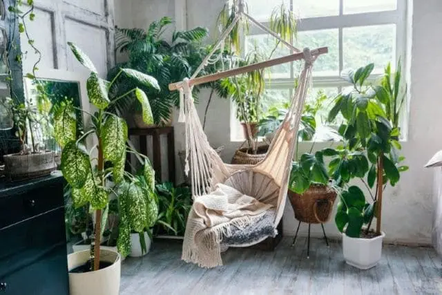

El diseño de interiores es un campo en constante evolución, y cada año trae consigo nuevas tendencias que redefinen cómo concebimos y habitamos nuestros espacios. Para 2025, se perfilan estilos que priorizan la sostenibilidad, la funcionalidad y la conexión con la naturaleza, sin dejar de lado la estética y el confort.
Sostenibilidad y Materiales Naturales
La conciencia ambiental sigue siendo una fuerza impulsora en el diseño. Veremos un aumento en el uso de materiales reciclados, upcycled y de origen local. La madera sin tratar, el bambú, el corcho, la cerámica artesanal y los textiles orgánicos como el lino y el algodón serán protagonistas. La biofilia, la integración de elementos naturales como plantas y luz natural, se consolidará como un pilar fundamental para crear ambientes que promuevan el bienestar.
Colores que Calman y Energizan
La paleta de colores para 2025 se inclinará hacia tonos tierra, verdes profundos, azules serenos y grises cálidos, que evocan tranquilidad y conexión con la naturaleza. Sin embargo, también habrá espacio para acentos vibrantes de colores como el terracota, el mostaza y el azul cobalto, utilizados para inyectar energía y personalidad a los espacios.
Mobiliario Multifuncional y Modular
Con la optimización del espacio como una prioridad, el mobiliario multifuncional y modular ganará aún más relevancia. Sofás convertibles, mesas extensibles, estanterías adaptables y piezas con almacenamiento integrado serán esenciales para hogares y oficinas que buscan versatilidad y eficiencia.
Tecnología Integrada y Discreta
La tecnología seguirá evolucionando para integrarse de manera más discreta en el diseño. Sistemas de iluminación inteligentes, dispositivos de climatización automatizados y soluciones de audio invisibles contribuirán a crear ambientes más cómodos y eficientes, sin sacrificar la estética.
En Resumen
El diseño de interiores en 2025 se centrará en la creación de espacios que no solo sean visualmente atractivos, sino también saludables, funcionales y adaptables a las necesidades cambiantes de sus habitantes. La sostenibilidad y la conexión con la naturaleza serán los pilares que guiarán las decisiones de diseño.